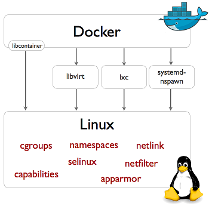
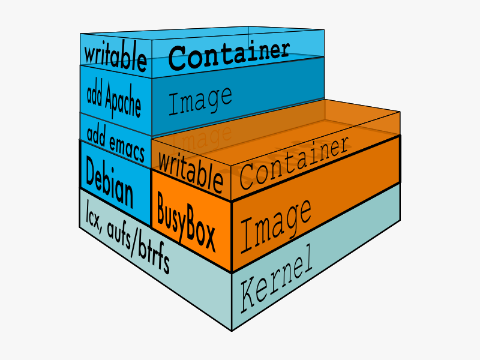

Docker y un sandbox Node.js
Historia

cgroups
cgroups (a backronym for control groups) is a Linux kernel feature to limit, account, and isolate resource usage (CPU, memory, disk I/O, etc.) of process groups. This work was started by engineers at Google (primarily Paul Menage and Rohit Seth) in 2006 under the name "process containers". In late 2007, it was renamed to "Control Groups" due to the confusion caused by multiple meanings of the term "container" in the Linux kernel, and merged into kernel version 2.6.24. Since then, many new features and controllers have been added, such as support for kernfs, firewalling, and the introduction of a unified hierarchy. – Wikipedia
LXC & Docker

LXC
LXC is a userspace interface for the Linux kernel containment features. Through a powerful API and simple tools, it lets Linux users easily create and manage system or application containers. – LXC

Docker
An open platform for distributed applications for developers and sysadmins. – Docker
Docker
Imagenes
- Dockerfile
FROM dockerfile/nodejs MAINTAINER Aldo Vizcaino <aldo.vizcaino87@gmail.com> # Set correct environment variables. ENV HOME /root RUN apt-get -qqy install git RUN git clone https://github.com/buritica/dibujemos.git /opt/dibujemos RUN apt-get clean && rm -rf /var/lib/apt/lists/* /tmp/* /var/tmp/* WORKDIR /opt/dibujemos RUN npm install express --save RUN npm install socket.io --save RUN npm install stylus --save RUN npm install ejs --save EXPOSE 3000 CMD ["node", "/opt/dibujemos/app.js"]
docker pull dockerfile/nodejs
Contenedores
CONTAINER ID IMAGE COMMAND CREATED STATUS PORTS NAMES
f26fc8e8cc87 dockerfile/nodejs:latest "bash" 20 minutes ago Up 20 minutes distracted_goodall
6fcb80eb5da1 dockerfile/nodejs:latest "node" 40 hours ago Exited (143) 39 hours ago cocky_heisenberg
9c44e3678af4 dockerfile/nodejs:latest "bash" 40 hours ago Exited (0) 40 hours ago insane_turing
a59309ff89ec krahser/ansible:latest "/sbin/my_init" 10 days ago Exited (-1) 47 hours ago silly_tesla
REPOSITORY TAG IMAGE ID CREATED VIRTUAL SIZE
dockerfile/nodejs latest c45639f061da 3 days ago 496.3 MB
krahser/ansible latest 8d159d3a1aa3 5 weeks ago 325 MB
phusion/baseimage 0.9.15 cf39b476aeec 10 weeks ago 289 MB
debian stable 802059b8f0ea 11 weeks ago 85.19 MB
Algunas experiencias
# -i, --interactive=false Keep STDIN open even if not attached
# -h, --hostname="" Container host name
# -t, --tty=false Allocate a pseudo-TTY
# -P, --publish-all=false Publish all exposed ports to the host interfaces
# -p, --publish=[] Publish a container's port to the host
format: ip:hostPort:containerPort | ip::containerPort | hostPort:containerPort | containerPort
(use 'docker port' to see the actual mapping)
docker run -i -t -p 127.0.0.1:7025:25 <Imagen> <proceso>
- Carpetas compartidas
# --name="" Assign a name to the container # -v, --volume=[] Bind mount a volume (e.g., from the host: -v /host:/container, from Docker: -v /container) # --volumes-from=[] Mount volumes from the specified container(s) docker run -v <path_compartido>:<path_container> <Imagen> <proceso>
Nodejs
Referencias
- Be a happier developer with Docker: Tricks of the trade Nicola Paolucci (Atlassian)
- ¿Qué es Node.js? Ejemplo realtime - Ejemplo usado
- Sandboxing Node.js with CoreOS and Docker
- 10 open source tools to make Docker even more powerful